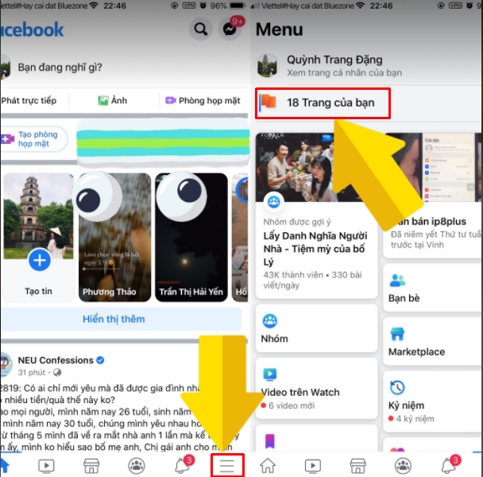
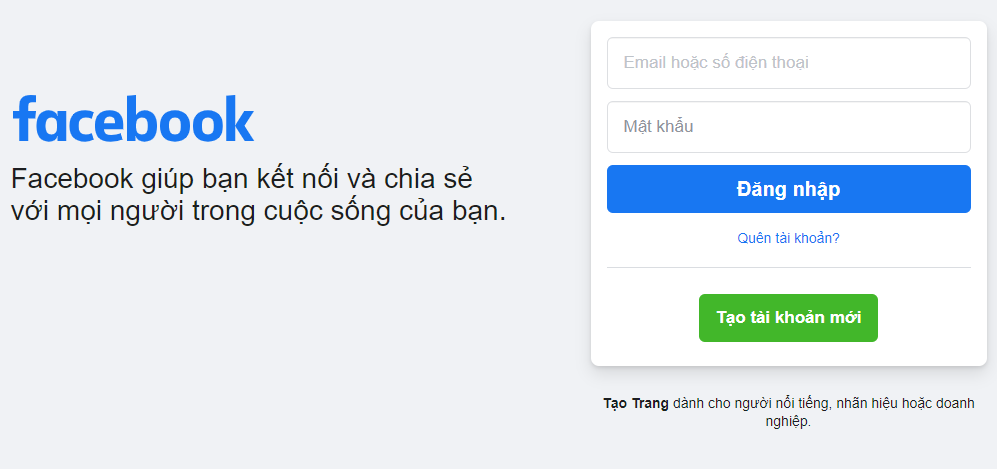

Hướng dẫn cách đổi tên Fanpage Facebook trong 1 nốt nhạc

Ty Nguyen
CEO ❤️ AhaChat. Love babies & chatbot.
Tên Fanpage Facebook là yếu tố khá quan trọng trong việc thu hút được lượt tiếp cận, đặc biệt với những người dùng Fanpage Facebook để kinh doanh online hoặc quảng bá thương hiệu. Nhưng có rất nhiều trường hợp khi tạo mới Fanpage Facebook, thường lấy đại một cái tên nào đó để tạo cho nhanh, về sau chính cái tên đó khiến bạn muốn thay đổi. Và nếu bạn đang thắc mắc làm thế nào để đổi tên Fanpage Facebook thì đừng lo, bài viết dưới đây sẽ hướng dẫn cách đổi tên Fanpage Facebook trong 1 nốt nhạc, cùng theo dõi nhé!
1. Lưu ý khi đổi tên Fanpage Facebook
Trước khi bắt tay vào việc đổi tên Fanpage Facebook, để việc đổi tên Fanpage được diễn ra nhanh chóng và tỷ lệ thành công cao, bạn cần nắm rõ các lưu ý sau:
Để đổi được tên Fanpage Facebook, điều lưu ý đầu tiên đó là bạn phải là quản trị viên của Fanpage mà bạn muốn đổi tên.
Trong một khoảng thời gian ngắn, bạn không nên thay đổi quá nhiều tên cho Fanpage của bạn. Hiện Facebook chưa có quy định về thời gian được đổi tên là sau bao lâu kể từ lần đổi tên trước đó. Tuy nhiên, nếu trong một khoảng thời gian ngắn mà bạn thay đổi tên Fanpage Facebook quá nhiều lần thì Fanpage của bạn có thể bị Facebook nghi ngờ spam và khoá chúng.
Vị trí bạn lựa chọn đổi tên Fanpage không bị Facebook hạn chế tính năng thay đổi tên trang Fanpage.
Trước khi có ý định thay đổi tên trang Fanpage, bạn nên đọc thật kỹ càng chính sách về đổi tên và đặt tên trang Fanpage của Facebook.
2. Hướng dẫn cách đổi tên Fanpage Facebook trên điện thoại
Chẳng cần phải dùng đến máy tính, bạn cũng có thể thay đổi trang Fanpage của bạn ngay trên chiếc điện thoại di động của bạn. Và có 2 cách để bạn đổi tên Fanpage Facebook trên điện thoại, đó là:
Đổi tên Fanpage Facebook thông qua ứng dụng Facebook
Đổi tên Fanpage Facebook thông qua ứng dụng Trình quản lý trang
Cách 1: Đổi tên Fanpage Facebook trên điện thoại thông qua ứng dụng Facebook
Các bước thực hiện đổi tên Fanpage Facebook trên điện thoại thông qua ứng dụng Facebook như sau:
Bước 1: Bạn đăng nhập vào tài khoản Facebook cá nhân là quản trị viên của Fanpage mà bạn muốn thay đổi tên.
Bước 2: Sau khi đăng nhập, tại giao diện trang chủ tài khoản Facebook cá nhân, bạn bấm chọn biểu tượng 3 gạch ngang ở góc phải phía dưới màn hình và chọn mục Trang của bạn.

Bước 3: Tại giao diện của mục Trang của bạn sẽ xuất hiện tất cả các trang Fanpage Facebook hiện bạn đang quản lý. Lúc này bạn bấm vào trang Fanpage Facebook mà bạn muốn thay đổi tên.
Bước 4: Sau khi bạn bấm vào trang Fanpage Facebook mà bạn muốn thay đổi tên, giao diện trang chủ xuất hiện. Tiếp đó, bạn bấm vào hình bánh răng cưa ở góc trái phía trên màn hình điện thoại => bấm chọn mục Thông tin Trang ở phần Cài đặt.
Bước 5: Tiếp theo, bạn bấm vào mục Tên ở phần Giới thiệu để thay đổi tên trang Fanpage Facebook.
Sau khi bạn điền tên Fanpage Facebook mới, bạn lưu lại sau đó chờ Facebook phê duyệt tên Fanpage mới thì việc đổi tên mới bắt đầu có hiệu lực.
Cách 2: Đổi tên Fanpage Facebook trên điện thoại thông qua ứng dụng Trình quản lý trang
Nếu bạn muốn thay đổi tên Fanpage Facebook trên điện thoại thông qua ứng dụng Trình quản lý trang, điều đầu tiên bạn phải tải ứng dụng này về máy điện thoại. Sau khi đã tải thành công, bạn thực hiện theo các bước hướng dẫn sau để thay đổi tên Fanpage Facebook
Bước 1: Đầu tiên, bạn cần mở ứng dụng Trình quản lý trang trên điện thoại di động của bạn và chọn trang Fanpage mà bạn muốn thay đổi tên.
Bước 2: Tại giao diện trang chủ của Fanpage bạn muốn thay đổi tên, bạn bấm vào biểu tượng hình chiếc túi xách ở góc dưới bên phải màn hình điện thoại. Tiếp theo đó, bạn bấm chọn mục Cài đặt.
Bước 3: Từ giao diện của mục Cài đặt, bạn kéo xuống dưới và bấm chọn mục Thông tin Trang.
Bước 4: Khi giao diện của mục Thông tin Trang xuất hiện, bạn bấm vào Chỉnh sửa tên để thay đổi tên. Sau khi điền xong tên mới cho Fanpage, bạn kéo xuống dưới và bấm vào Lưu.
Sau khi bạn bấm Lưu, sẽ có thông báo từ Facebook về việc xem xét yêu cầu của bạn.
Như vậy là bạn đã hoàn thành xong việc đổi tên Fanpage thông qua ứng dụng Trình quản lý trang. Giờ bạn chỉ cần chờ đợi Facebook xét duyệt nữa là việc đổi tên trang Fanpage Facebook của bạn thành công.
3. Hướng dẫn đổi tên Fanpage Facebook trên máy tính
Bên cạnh việc thay đổi tên Fanpage Facebook trên điện thoại thì trên máy tính bạn cũng có thể thực hiện được. Các bước thực hiện cũng rất đơn giản và nhanh chóng, bạn chỉ cần làm theo các hướng dẫn sau:
Bước 1: Đầu tiên, bạn cần phải truy cập vào website facebook.com trên trình duyệt web. Sau đó đăng nhập vào tài khoản Facebook cá nhân là quản trị viên của Fanpage bạn muốn thay đổi tên.

Bước 2: Lúc này, xuất hiện giao diện trang chủ của tài khoản Facebook cá nhân, bạn bấm vào mục Trang ở phần menu phía tay trái màn hình máy tính.
Bước 3: Sau khi bạn bấm vào mục Trang sẽ xuất hiện tất cả trang Fanpage Facebook mà tài khoản Facebook cá nhân của bạn đang quản lý. Bạn bấm vào chọn trang Fanpage Facebook mà bạn muốn thay đổi tên.
Bước 4: Khi bạn đã bấm chọn vào Fanpage bạn muốn thay đổi tên, giao diện trang chủ của Fanpage đó xuất hiện, tại menu phía bên trái màn hình máy tính bạn bấm chọn mục Chỉnh sửa thông tin trang.
Bước 5: Sau khi bạn bấm vào Chỉnh sửa thông tin Trang giao diện mới xuất hiện, lúc này bạn bấm vào phần Tên trang ở mục Chung để thay đổi sang tên khác mà bạn muốn.
Bước 6: Khi đã điền xong tên trang Fanpage mới, bạn trỏ chuột ra phía ngoài ô tên trang ngay lập tức sẽ có thông báo Xác nhận yêu cầu đổi tên.
Tại thông báo này, bạn sẽ thấy Facebook đưa ra tên hiện tại của Fanpage và tên sau khi thay đổi để bạn xác nhận lại lần cuối. Lúc này, nếu bạn không có thay đổi gì nữa thì bấm vào Yêu cầu thay đổi.
Như vậy, chỉ với vài bước đơn giản, bạn đã đổi tên trang Fanpage thành công rồi nhé.
Hy vọng với những thông tin chia sẻ trên đây đã giúp bạn biết được cách đổi tên Fanpage Facebook cả trên điện thoại và máy tính trong một nốt nhạc. Nếu bạn có câu hỏi hay góp ý gì thì đừng quên để lại bình luận ngay mục dưới đây, chúng tôi sẽ giải đáp cho bạn trong thời gian sớm nhất. Cảm ơn bạn đã theo dõi bài viết, chúc bạn thực hiện thành công!